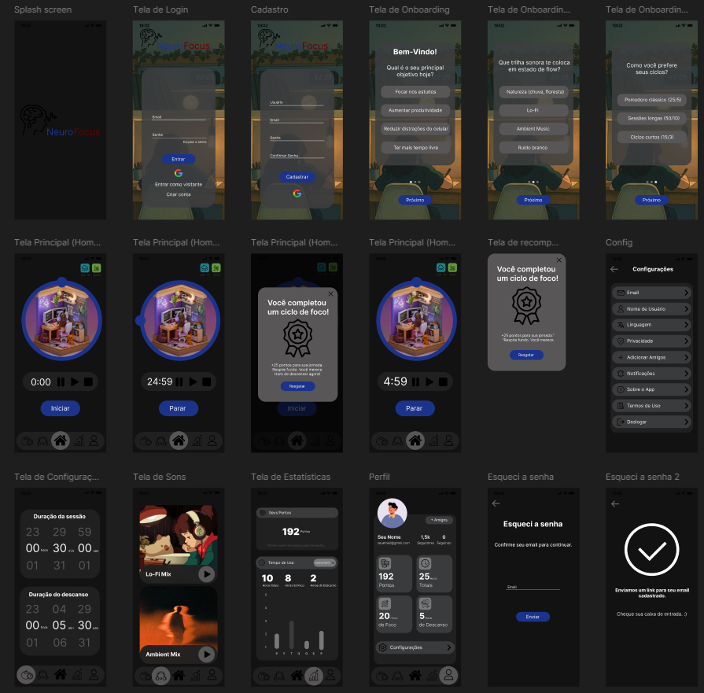

Aplicativo de foco e produtividade baseado na técnica Pomodoro.
Baseado em um problema e necessidade pessoal esse projeto foi criado como uma solução digital que ajude usuários a manter o foco em tarefas utilizando ciclos de concentração e descanso. A interface foi desenhada pensando em simplicidade, clareza visual e acessibilidade.
